Entry Package
$499 Ceramic Coating
A strong starter option for drivers who want added shine and protection at a more accessible price point.
- Exterior prep
- Ceramic coating application
- Gloss and paint protection boost
Ceramic Coating in Anaheim, CA
JJ Details provides ceramic coating services in Anaheim for drivers who want easier maintenance, deeper shine, and better long-term protection.
Our Work
Take a look at some of the vehicles we’ve coated for Anaheim-area drivers, from deep gloss finishes to clean, protected paint that stands out in every light.
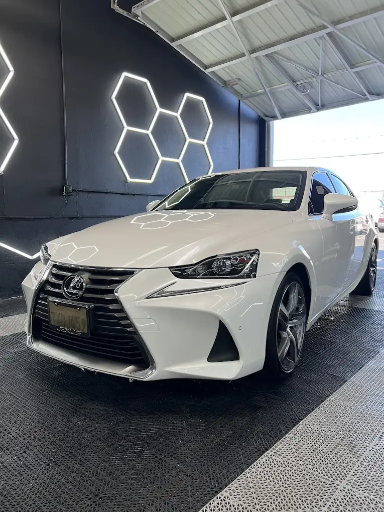
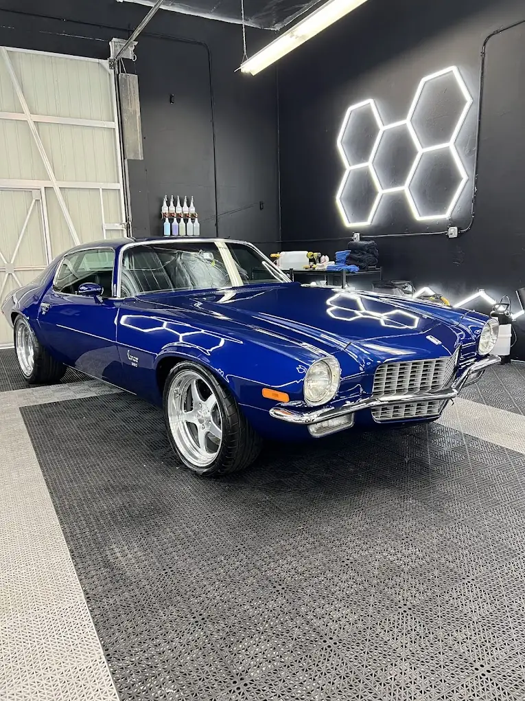
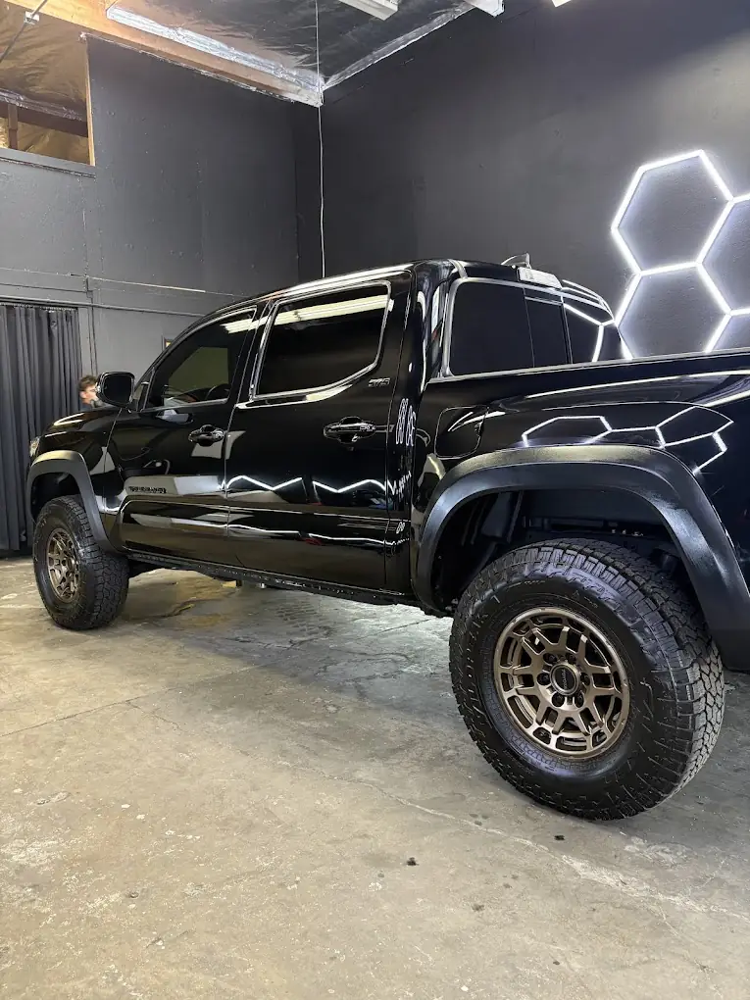
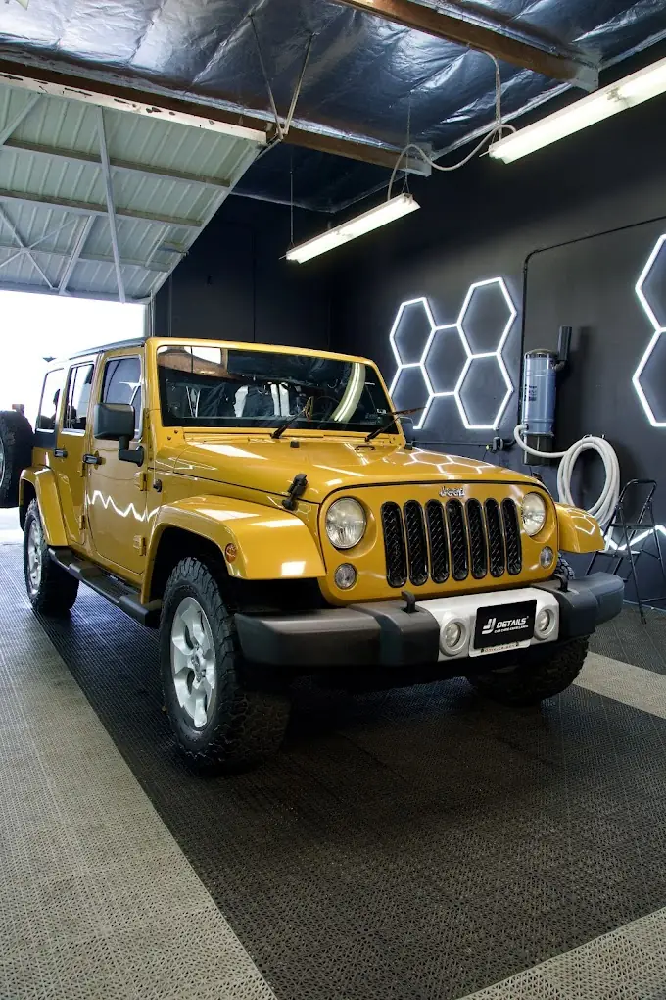
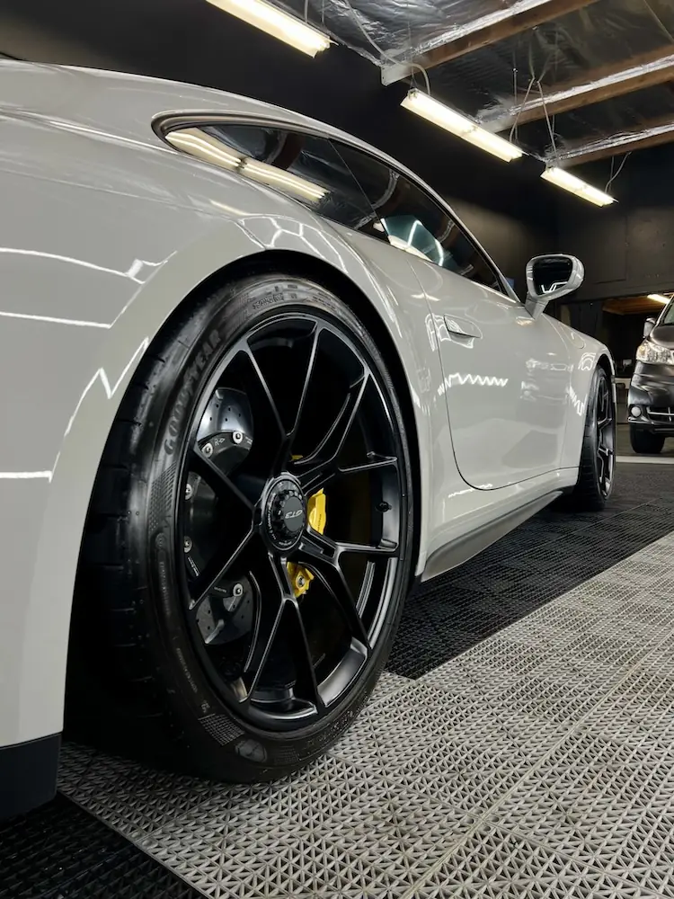
Reviews
Anaheim drivers choose JJ Details for ceramic coating because they want real shine, real protection, and a team that pays attention to the details.
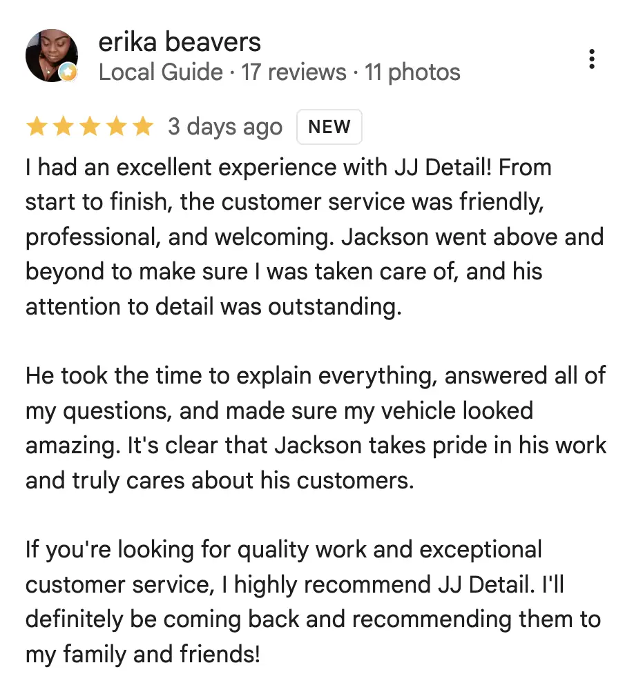
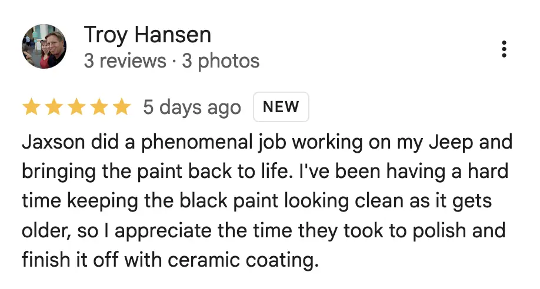
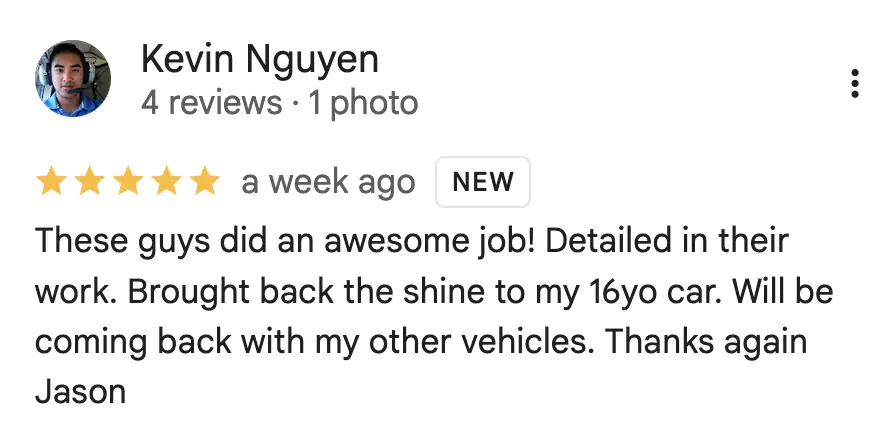
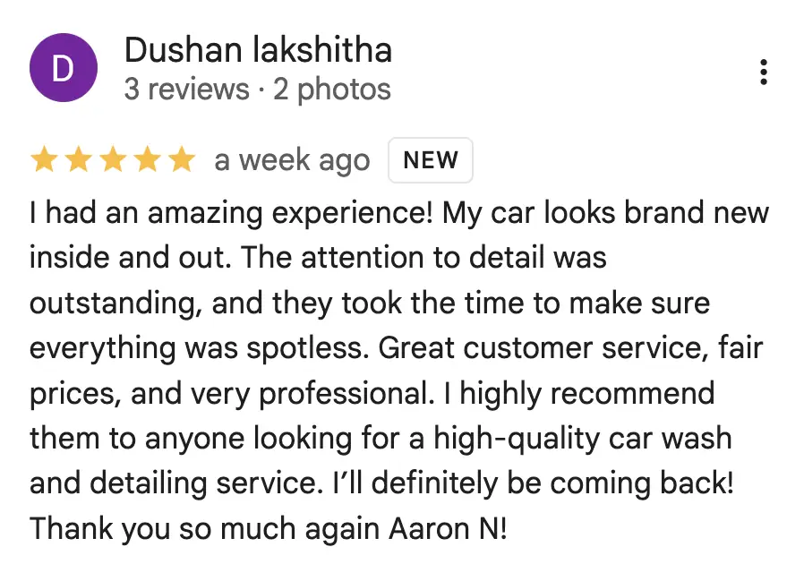
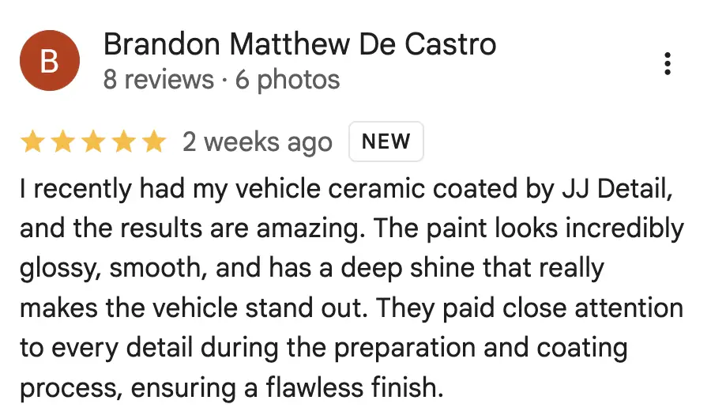
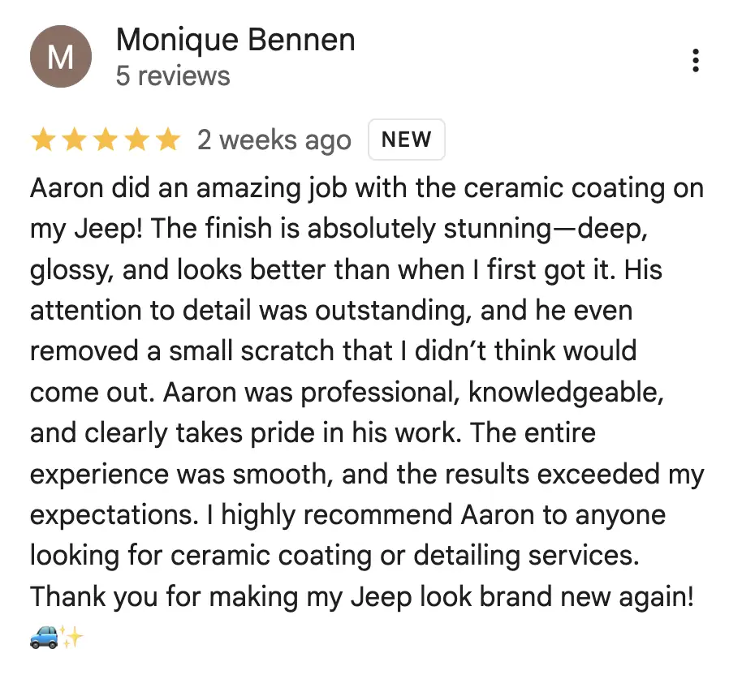
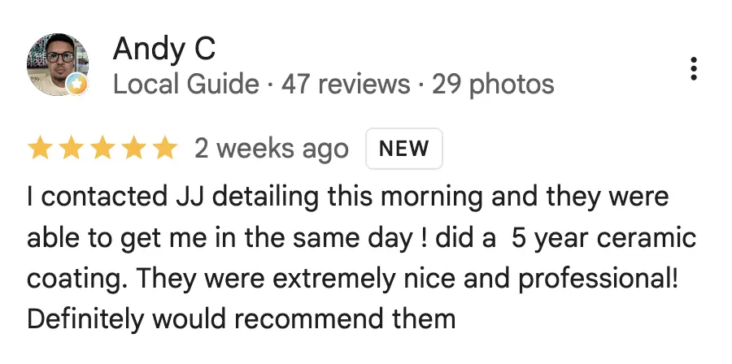
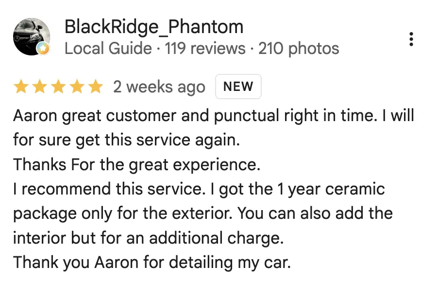
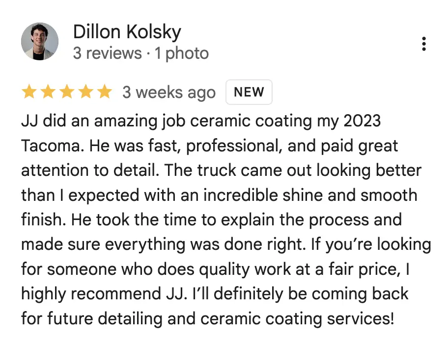
Pricing
We keep our ceramic coating options straightforward so it’s easy to choose the level of protection and finish that makes sense for your vehicle.
Entry Package
A strong starter option for drivers who want added shine and protection at a more accessible price point.
Most Popular
A higher-tier option for drivers who want more correction, more refinement, and a stronger final presentation.
FAQ
It adds protection, improves gloss, and helps make routine washing easier.
That depends on the package, the prep work, and how the vehicle is maintained.
Yes, especially if you want easier upkeep and better long-term paint presentation.
No, coating protects the finish, but paint correction may be needed for scratch removal.
Sometimes. If the paint has swirl marks or defects, correction can improve the final result.
Timing depends on the condition of the vehicle and which coating package you choose.
Yes, but final pricing and time can vary based on the vehicle and paint condition.
Call JJ Details directly and we’ll help you choose the right package and get scheduled.